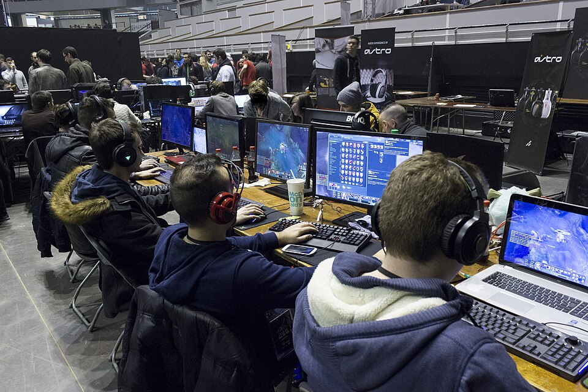

Αν έγραψες στο Google «pool ntp org iptv», πιθανότατα έχεις μία από δύο περιπτώσεις: είδες το pool.ntp.org σε κάποια ρύθμιση της συσκευής σου και αναρωτιέσαι τι σχέση έχει με το IPTV, ή το πρόγραμμα των καναλιών (EPG) δείχνει λάθος ώρα και ψάχνεις τρόπο να το διορθώσεις. Και στις δύο περιπτώσεις η απάντηση είναι η ίδια: η σωστή ώρα στη συσκευή είναι θεμέλιο για μια ομαλή εμπειρία IPTV.
Το pool.ntp.org είναι μια δωρεάν, παγκόσμια ομάδα χρονικών διακομιστών που χρησιμοποιούν σχεδόν όλες οι σύγχρονες συσκευές για να συγχρονίζουν το ρολόι τους μέσω του πρωτοκόλλου NTP. Δεν είναι υπηρεσία IPTV, ούτε λίστα καναλιών. Είναι ένας βοηθητικός μηχανισμός που, όταν δουλεύει σωστά, περνά απαρατήρητος, και όταν αποτυγχάνει προκαλεί προβλήματα: πρόγραμμα που δείχνει μία ώρα νωρίτερα, εγγραφές που ξεκινούν λάθος, καθυστερήσεις στην ενεργοποίηση ή ακόμη και αποτυχημένη σύνδεση.
Σε αυτόν τον οδηγό θα δεις τι ακριβώς είναι το NTP, γιατί μετράει στο IPTV, πώς το ρυθμίζεις σε Android TV, smart TV, Fire TV και router, και πώς λύνεις τα πιο συνηθισμένα προβλήματα. Στο τέλος θα καταλάβεις και γιατί, μαζί με τη σωστή ώρα, μια αξιόπιστη υπηρεσία όπως το greek iptv κάνει τη διαφορά στην ελληνική τηλεόραση, είτε μένεις στην Ελλάδα είτε στο εξωτερικό.
Τι είναι το pool.ntp.org
Το NTP (Network Time Protocol) είναι ένα πρωτόκολλο που επιτρέπει σε συσκευές να ρυθμίζουν το ρολόι τους με ακρίβεια χιλιοστών του δευτερολέπτου, επικοινωνώντας με διακομιστές χρόνου. Το pool.ntp.org είναι ένα σύνολο χιλιάδων εθελοντικών διακομιστών σε όλο τον κόσμο, που απαντούν στο ίδιο όνομα και μοιράζουν το φορτίο.
Πώς λειτουργεί στην πράξη
Όταν η συσκευή σου ζητά την ώρα από το pool.ntp.org, το σύστημα DNS την κατευθύνει σε έναν κοντινό διακομιστή. Υπάρχουν και περιφερειακά υπο-pools, όπως gr.pool.ntp.org για την Ελλάδα, europe.pool.ntp.org για την Ευρώπη και αριθμημένες παραλλαγές (0.gr.pool.ntp.org, 1.gr.pool.ntp.org κ.ο.κ.), ώστε να υπάρχουν εναλλακτικές αν κάποιος διακομιστής δεν απαντά.
Τι σχέση έχει με το IPTV
Καμία άμεση. Το pool.ntp.org δεν μεταδίδει κανάλια. Σχετίζεται όμως έμμεσα, γιατί οι εφαρμογές IPTV βασίζονται στην ώρα της συσκευής για το πρόγραμμα, τις εγγραφές, τις ενημερώσεις λίστας και την επικύρωση σύνδεσης. Αν θέλεις πρώτα να καταλάβεις τα βασικά, δες τον οδηγό τι είναι το iptv.
Γιατί μετράει η ώρα στο IPTV
Η λάθος ώρα φαίνεται μικρό πρόβλημα, αλλά στο IPTV έχει πολλές εκδηλώσεις. Παρακάτω είναι οι πιο συνηθισμένες.
Λάθος πρόγραμμα καναλιών (EPG)
Ο ηλεκτρονικός οδηγός προγράμματος αντιστοιχίζει τις εκπομπές με την ώρα της συσκευής. Αν το ρολόι είναι μία ώρα πίσω ή μπροστά, το δελτίο ειδήσεων θα εμφανίζεται σε λάθος σημείο και ο οδηγός θα φαίνεται «χαλασμένος», ενώ το πρόβλημα είναι στη συσκευή και όχι στην υπηρεσία.
Εγγραφές και χρονοπρογραμματισμός
Οι προγραμματισμένες εγγραφές ξεκινούν και τελειώνουν με βάση το ρολόι. Μια απόκλιση λίγων λεπτών αρκεί για να κοπεί η αρχή ή το τέλος ενός αγώνα ή μιας σειράς.
Ενημέρωση λίστας και πιστοποιητικά
Πολλές εφαρμογές κατεβάζουν λίστες και συνδέονται μέσω ασφαλούς σύνδεσης (HTTPS). Αν η ώρα της συσκευής είναι πολύ λάθος, τα πιστοποιητικά θεωρούνται ληγμένα ή μη έγκυρα και η σύνδεση αποτυγχάνει, με μηνύματα σφάλματος που μοιάζουν να φταίει ο πάροχος.
Μετατόπιση χρόνου (timeshift) και catch-up
Λειτουργίες όπως η επανάληψη εκπομπής εξαρτώνται από σωστούς χρονικούς δείκτες. Με λάθος ρολόι μπορεί να μην εμφανίζονται οι εκπομπές που έχουν περάσει ή να ανοίγει λάθος τμήμα.
Πώς ρυθμίζεις το NTP σε κάθε συσκευή
Στις περισσότερες συσκευές η αυτόματη ώρα δικτύου είναι ήδη ενεργή. Αν όχι, ακολούθησε τα παρακάτω βήματα.
Android TV και TV box
- Άνοιξε Ρυθμίσεις → Σύστημα → Ημερομηνία και ώρα.
- Ενεργοποίησε την Αυτόματη ημερομηνία και ώρα (ώρα που παρέχεται από το δίκτυο).
- Επίλεξε τη σωστή ζώνη ώρας, για παράδειγμα Αθήνα (GMT+2) ή τη δική σου αν ζεις στο εξωτερικό.
- Κάνε επανεκκίνηση και άνοιξε ξανά την εφαρμογή IPTV.
Σε συσκευές που δεν επιτρέπουν αλλαγή διακομιστή, το Android χρησιμοποιεί δικό του NTP. Αν θέλεις πλήρη έλεγχο, μπορείς να το διαχειριστείς από το router. Δες και τον οδηγό για το καλύτερο iptv player για android tv box.
Samsung και LG smart TV
Στις Samsung η επιλογή βρίσκεται στο μενού Γενικά → Διαχειριστής συστήματος → Ώρα, όπου διαλέγεις «Αυτόματη» ώρα. Στις LG πήγαινε στις Ρυθμίσεις → Γενικά → Ώρα και ημερομηνία και ενεργοποίησε την αυτόματη ρύθμιση. Και στις δύο η ζώνη ώρας πρέπει να ταιριάζει με τη χώρα σου. Περισσότερα για τις συσκευές στο άρθρο lg tv iptv.
Fire TV Stick και Apple TV
Το Fire TV παίρνει την ώρα αυτόματα όταν είναι συνδεδεμένο στο διαδίκτυο, ενώ ο χρήστης επιλέγει μόνο τη ζώνη ώρας από τις Ρυθμίσεις. Το Apple TV ρυθμίζεται από Ρυθμίσεις → Γενικά → Ημερομηνία και ώρα με ενεργή την αυτόματη επιλογή.
Router και δίκτυο
Αρκετά router διαθέτουν δικό τους πεδίο NTP, όπου μπορείς να βάλεις π.χ. gr.pool.ntp.org. Έτσι το ίδιο το δίκτυο έχει σωστή ώρα και μπορεί να τη μοιράζει στις συσκευές. Αν δεν είσαι σίγουρος για τις ρυθμίσεις του router, αρκεί να αφήσεις την προεπιλογή του κατασκευαστή.
Ποιους διακομιστές να χρησιμοποιήσεις
Η επιλογή του σωστού pool βελτιώνει την ακρίβεια και την ταχύτητα συγχρονισμού. Ο παρακάτω πίνακας δείχνει τις πιο χρήσιμες επιλογές για Έλληνες θεατές.
| Διακομιστής | Περιοχή | Πότε τον χρησιμοποιείς |
|---|---|---|
| gr.pool.ntp.org | Ελλάδα | Για χρήστες στην Ελλάδα |
| europe.pool.ntp.org | Ευρώπη | Για Έλληνες σε Γερμανία, Ηνωμένο Βασίλειο, Σουηδία κ.ά. |
| north-america.pool.ntp.org | Βόρεια Αμερική | Για τη διασπορά σε ΗΠΑ και Καναδά |
| oceania.pool.ntp.org | Ωκεανία | Για Αυστραλία και Νέα Ζηλανδία |
| pool.ntp.org | Παγκόσμιο | Γενική επιλογή όταν δεν ξέρεις περιοχή |
Σημείωση: το NTP μεταφέρει ώρα σε UTC. Η τοπική ώρα (π.χ. θερινή και χειμερινή ώρα Ελλάδας) προκύπτει από τη ζώνη ώρας που έχεις ορίσει στη συσκευή, γι' αυτό τα δύο πρέπει να ρυθμίζονται μαζί.

Διόρθωση EPG και ζώνης ώρας
Η πιο συχνή ερώτηση μετά το NTP είναι «γιατί ο οδηγός μου δείχνει λάθος ώρα;». Πολλές φορές η αιτία είναι η ζώνη ώρας και όχι ο διακομιστής.
Έλεγχος ζώνης ώρας στη συσκευή
Βεβαιώσου ότι η συσκευή δεν είναι ρυθμισμένη σε ζώνη άλλης χώρας. Ένας Έλληνας στη Γερμανία, για παράδειγμα, πρέπει να έχει τη ζώνη ώρας της Γερμανίας για τα τοπικά του, αλλά ο οδηγός ελληνικών καναλιών θα εμφανίζεται με βάση την ώρα που ρυθμίζει η εφαρμογή.
Μετατόπιση EPG μέσα στην εφαρμογή
Αρκετοί players έχουν επιλογή «EPG time shift» (π.χ. +1 ή -1 ώρα). Αν η ώρα της συσκευής είναι σωστή και ο οδηγός εξακολουθεί να είναι μετατοπισμένος, ρύθμισε εκεί την απόκλιση. Δες τα βήματα στον οδηγό για το iptv smarters pro.
Ανανέωση του οδηγού
Μετά από αλλαγή ώρας ή ζώνης, κάνε ανανέωση του EPG και, αν χρειαστεί, διέγραψε την προσωρινή μνήμη της εφαρμογής. Ο οδηγός φορτώνει ξανά σε λίγα λεπτά.
Συχνά προβλήματα και λύσεις
Αν μετά τη ρύθμιση κάτι εξακολουθεί να μη δουλεύει, δοκίμασε τα παρακάτω.
Η ώρα δεν συγχρονίζεται καθόλου
Έλεγξε ότι η συσκευή έχει ίντερνετ και ότι το router δεν μπλοκάρει την πόρτα UDP 123, που χρησιμοποιεί το NTP. Ορισμένα δίκτυα εταιρειών ή ξενοδοχείων περιορίζουν την κίνηση αυτή.
Η εφαρμογή δεν συνδέεται ή δίνει σφάλμα πιστοποιητικού
Συνήθως οφείλεται σε ρολόι με μεγάλη απόκλιση. Διόρθωσε πρώτα την ώρα και ύστερα δοκίμασε ξανά τη σύνδεση. Για βοήθεια με στοιχεία πρόσβασης, δες το άρθρο iptv user password.
Κολλήματα στη ροή
Η ώρα σπάνια προκαλεί buffering. Αν τα κανάλια κολλάνε, έλεγξε την ταχύτητα ίντερνετ (περίπου 8-10 Mbps για HD ανά ροή) και προτίμησε ενσύρματη σύνδεση. Αν χρειάζεσαι εναλλακτικές, δες και τις αγορές για iptv providers.
Η ώρα επανέρχεται λάθος μετά από επανεκκίνηση
Σε παλιές συσκευές μπορεί να έχει εξαντληθεί η μπαταρία του εσωτερικού ρολογιού. Η αυτόματη ώρα δικτύου συνήθως το αντισταθμίζει, αλλά χρειάζεται ενεργό ίντερνετ κατά την εκκίνηση.
Πρακτικές συμβουλές για καθημερινή χρήση
Μια φορά που η ώρα είναι σωστή, λίγες συνήθειες σε βοηθούν να μην ξαναασχοληθείς με το θέμα.
Έλεγχος μετά από διακοπή ρεύματος
Μετά από διακοπή ρεύματος ή αλλαγή router, δώσε στη συσκευή ένα λεπτό να συνδεθεί στο ίντερνετ πριν ανοίξεις την εφαρμογή IPTV. Έτσι προλαβαίνει να συγχρονίσει το ρολόι και αποφεύγεις τα λανθασμένα μηνύματα σφάλματος.
Αλλαγή θερινής και χειμερινής ώρας
Η Ελλάδα αλλάζει ώρα δύο φορές τον χρόνο. Αν η συσκευή έχει αυτόματη ζώνη ώρας, η αλλαγή γίνεται μόνη της. Αν όμως έχεις ορίσει σταθερή απόκλιση (π.χ. GMT+2), ο οδηγός θα μετατοπιστεί κατά μία ώρα το καλοκαίρι και θα χρειαστεί χειροκίνητη διόρθωση.
Ταξίδια και Έλληνες του εξωτερικού
Αν ταξιδεύεις με το tablet ή το κινητό σου, η ζώνη ώρας θα αλλάξει αυτόματα στη νέα χώρα. Το πρόγραμμα των ελληνικών καναλιών δεν αλλάζει, επομένως η ώρα εμφάνισης μπορεί να διαφέρει. Αυτό είναι φυσιολογικό και δεν σημαίνει πρόβλημα της υπηρεσίας.
Ασφάλεια και καλές πρακτικές
Το NTP είναι ακίνδυνο όταν χρησιμοποιείς γνωστούς διακομιστές, αλλά αξίζει να ακολουθείς μερικούς απλούς κανόνες.
- Χρησιμοποίησε επίσημα pools ή τον διακομιστή του κατασκευαστή της συσκευής, όχι άγνωστες διευθύνσεις από φόρουμ.
- Μην εγκαθιστάς «εφαρμογές συγχρονισμού» από άγνωστες πηγές. Η ώρα δικτύου είναι ενσωματωμένη στο σύστημα.
- Κράτα ενημερωμένο το λογισμικό της συσκευής και του router.
- Απέφυγε μη επίσημες λίστες και σελίδες που ζητούν στοιχεία χωρίς εξήγηση. Για περισσότερα, διάβασε το perfect iptv για τα κριτήρια μιας αξιόπιστης υπηρεσίας.
Για σύγκριση με άλλες υπηρεσίες της αγοράς, η tilaa iptv και η romania iptv απευθύνονται σε διαφορετικά κοινά, ενώ το Greek IPTV εστιάζει αποκλειστικά στον Έλληνα θεατή. Μπορείς επίσης να δεις τα άρθρα open tv iptv και paid iptv για περισσότερες επιλογές.
Γιατί το Greek IPTV είναι πρακτική επιλογή
Όταν η ώρα και το δίκτυο είναι σωστά ρυθμισμένα, το μόνο που μένει είναι η ποιότητα της υπηρεσίας. Το Greek IPTV προσφέρει πρόσβαση σε +30.000 κανάλια και +150.000 ταινίες και σειρές, με έμφαση στα ελληνικά κανάλια, τα αθλητικά, τις ειδήσεις και τα παιδικά.
- Άμεση ενεργοποίηση μετά την εγγραφή, χωρίς μακροχρόνιο συμβόλαιο.
- Συμβατότητα με smart TV, Android, iOS, Fire TV, TV box και υπολογιστή.
- Τιμές από €10.99/μήνα, με ξεκάθαρα πακέτα.
- Υποστήριξη για γρήγορη επίλυση προβλημάτων ρύθμισης.
Αναλυτικές οδηγίες υπάρχουν στη σελίδα tutorial, ενώ για γρήγορες απορίες μπορείς να δεις τις συχνές ερωτήσεις.
Συχνές Ερωτήσεις για το Pool NTP Org IPTV
Τι είναι το pool.ntp.org;
Είναι μια παγκόσμια ομάδα εθελοντικών διακομιστών χρόνου που χρησιμοποιείται για τον συγχρονισμό του ρολογιού συσκευών μέσω του πρωτοκόλλου NTP. Δεν είναι υπηρεσία IPTV.
Χρειάζεται το IPTV διακομιστή NTP;
Δεν χρειάζεται ειδική ρύθμιση, αρκεί η συσκευή να έχει σωστή ώρα. Οι περισσότερες το κάνουν αυτόματα μέσω NTP, και αυτό επηρεάζει το EPG, τις εγγραφές και τις συνδέσεις.
Ποιον διακομιστή να βάλω στην Ελλάδα;
Ο πιο κατάλληλος είναι ο gr.pool.ntp.org. Αν δεν υπάρχει επιλογή στη συσκευή, αφήνεις την προεπιλογή του κατασκευαστή.
Γιατί το πρόγραμμα των καναλιών δείχνει λάθος ώρα;
Συνήθως φταίει η ζώνη ώρας της συσκευής ή η απενεργοποιημένη αυτόματη ώρα. Διόρθωσέ τα και ανανέωσε τον οδηγό EPG. Αν χρειαστεί, χρησιμοποίησε το time shift της εφαρμογής.
Δουλεύει το Greek IPTV εκτός Ελλάδας;
Ναι. Η υπηρεσία απευθύνεται και στη διασπορά, αρκεί να υπάρχει σταθερή σύνδεση στο ίντερνετ και σωστή ρύθμιση ώρας στη συσκευή.
Μπορεί η λάθος ώρα να μπλοκάρει την εφαρμογή;
Ναι, ειδικά όταν η απόκλιση είναι μεγάλη, γιατί τα πιστοποιητικά ασφαλείας θεωρούνται μη έγκυρα και η σύνδεση αποτυγχάνει. Η διόρθωση της ώρας συνήθως λύνει το πρόβλημα.
Πρέπει να ανοίξω την πόρτα 123 στο router;
Συνήθως όχι, γιατί η εξερχόμενη κίνηση NTP επιτρέπεται από προεπιλογή. Μόνο σε δίκτυα με αυστηρό firewall μπορεί να χρειάζεται έλεγχος.
Πόσο κοστίζει το Greek IPTV;
Οι τιμές ξεκινούν από €10.99/μήνα, με πολλαπλά πακέτα και άμεση ενεργοποίηση. Τα πλήρη στοιχεία υπάρχουν στην κεντρική σελίδα.
Συμπέρασμα
Πριν κλείσουμε, μια γρήγορη λίστα ελέγχου: ενεργοποίησε την αυτόματη ώρα, διάλεξε τη σωστή ζώνη ώρας, ανανέωσε το EPG και κάνε επανεκκίνηση της εφαρμογής. Τα τέσσερα αυτά βήματα λύνουν σχεδόν όλες τις περιπτώσεις όπου το πρόγραμμα των καναλιών δείχνει λάθος ώρα.
Το «pool ntp org iptv» δεν είναι προϊόν, αλλά ένα τεχνικό ζήτημα με πρακτικό αντίκτυπο: η σωστή ώρα στη συσκευή. Με ενεργή αυτόματη ώρα δικτύου, σωστή ζώνη ώρας και, όπου χρειάζεται, ένα κατάλληλο pool όπως το gr.pool.ntp.org, εξαφανίζονται τα περισσότερα προβλήματα με το EPG, τις εγγραφές και τις συνδέσεις.
Αν μετά τη ρύθμιση θέλεις ελληνική τηλεόραση χωρίς περιπλοκές, το Greek IPTV σου δίνει σταθερά κανάλια, αθλητικά, ειδήσεις και ταινίες από €10.99/μήνα. Ξεκίνα από τη σωστή ώρα και συνέχισε με μια υπηρεσία που δουλεύει σωστά, στο σπίτι σου ή οπουδήποτε στον κόσμο.